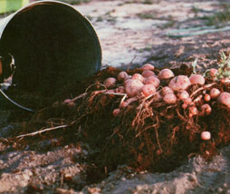
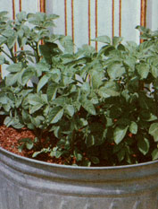

Remember what potatoes used to taste like . . . hot and steaming from the oven, full of fluffy white meal, and with an earthy flavor that didn't need the help of butter or sour cream? Well, you can raise your own spuds and recapture that special flavor, and you won't have to do a lot of backbreaking digging, either. You can do what I do and grow taters in a barrel. . . and what's more, that container is filled with sawdust. Yep, you heard me right, sawdust! Here's how it's done:
First, get yourself a barrel. You can use an old metal or plastic trash can, or even a discarded whiskey keg. However, the size of the container will determine the number of "earth apples" you'll harvest, so make your selection accordingly. To prepare your growin' bin, poke a series of holes-spaced about six inches in each direction-in the bottom of the container. The drainage provided by the bores will help keep your spuds' "feet" dry ... an important consideration. Then spread a sheet of fiberglass screening over the holes, and put about six inches of soil in the bottom of the barrel. Next comes a four-inch layer of sawdust . . . and-with that in place-you're ready to plant the seed potatoes.
As you probably know, spuds-unlike most vegetables-aren't usually raised from seed. Instead, they're sprouted from the eyes of fully grown tubers . . . known as seed potatoes. So, if you grew your own crop of taters last year and set some of the bumpy beauties aside, you're ahead of the game. If not, don't worry: There are commercial vendors of certified seed potatoes listed at the end of this article. (There's one source to avoid, however: store-bought spuds, even If they are beginning to sprout. The commercial edibles have usually been sprayed with an antisprouting chemical . . . and even the ones that do put forth new growth will develop poorly.)
Slice your seed potatoes so that each chunk contains two eyes, and let the severed spuds sit for a day or two while their cut surfaces dry. Next, take the "seeds" and push 'em down into the layer of saw dust in the barrel . . . just far enough so they're covered. Now dampen the tree shavin's and stand back. In only a few days you'll find little plants sproutin' through the sawdust. Then, each time these young'uns grow a couple of inches above the woodwaste, dump in another load to cover 'em up, and give the crop a soaking. Since the new potatoes form above their parent eye, you are-in effect-creating room for more down-home delicacies each time you bury the plant! By the time the container is full, you'll have two or three feet of barrelgrown beauties to harvest.
Come September, when it's time to gather your May-planted crop, you can forget about your spading fork. Simply tilt the barrel over on Its side, give it a shake or two to get things moving, and pour out the most beautiful crop of luscious spuds you've ever seen! And-after you've taken those terrific taters from their nest you'll have some mighty fine organic material left over to work into your garden soil. But plantin' time !s coming on, and seed potato stocks are often limited ... so you'd better get crackin' if you want to raise a banquet In a barrel!
|
 |
 |
|